Tutorial 1B. Installing XAMPP for Mac
- Apache HTTP Web Server
- MySQL Database Management System
- PHP (a server side scripting language)
- PHPMyAdmin (MySQL Web-based graphical interface)
- Tomcat Java Web Server
Although we can install each of the above 5 packages individually, it is a convenient way to install them altogether in XAMPP, which can help us avoid a lot of configuration headache. Otherwise, you need to configure Apache with PHP, PHP with MySQL, and PHPMyAdmin with MySQL that is error-prone.
1. Installing XAMPP First we need to select a right version to download. The current version XAMPP uses MariaDB instead of MySQL due to the fact that MySQL was acquired by Oracle. Although MariaDB is supposed to preserve all the features of MySQL, we will be patient until we have confidence on MariaDB. For this class, we still choose an old version of XAMPP that contains MySQL.
- Go to the download page: https://xampp-for-mac-os-x.en.uptodown.com/mac/old. I find this page for older versions of XAMPP that contains MySQL. 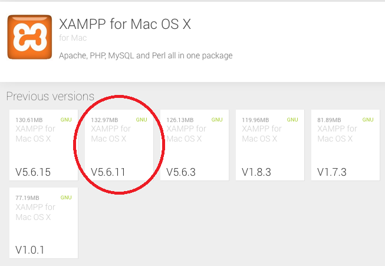 We choose the version 5.6.11. Based on my experience, the version 5.6.15 has a very high failure rate.
- The installation file is xampp-for-mac-os-x-5-6-11-multi-mac.dmg. By default, this file is stored in your Downloads folder. You have a quick way to access this file by clicking the arrow sign on the upper right corner of your browser. 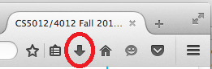 After you select the installation file, you will see a small window that contains an XAMPP installer icon, 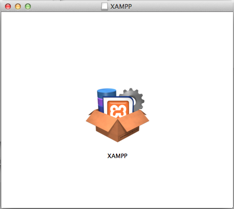
- Double-click the icon to start the installation. A warning window pops up. 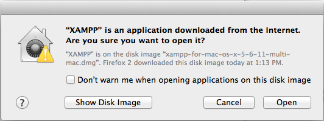 Click the Open button. You need to enter your password into the following small window, 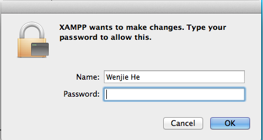 After a few seconds, the setup window pops up,
- Click the Next button, and accept the default setting in the following window, 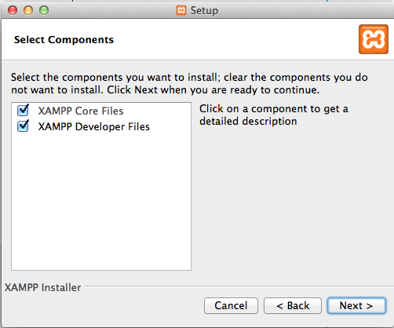 Click the Next button, you will see the installation directory for XAMPP, 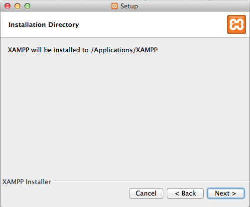 Click the Next button, and uncheck the checkbox so as to avoid many annoying advertising messages, 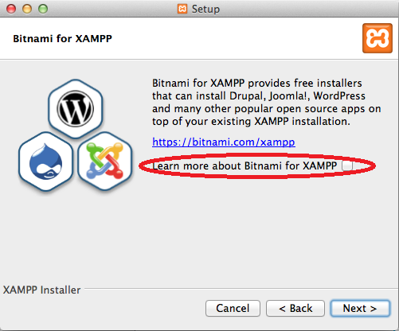 Click the Next button, 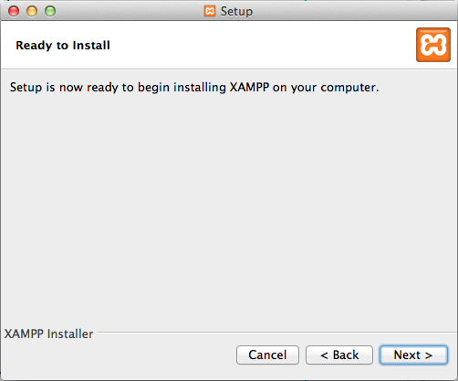 Click the Next button, the installer starts running. 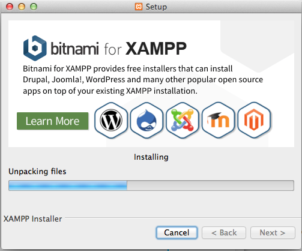
- When the installation completes, you will see 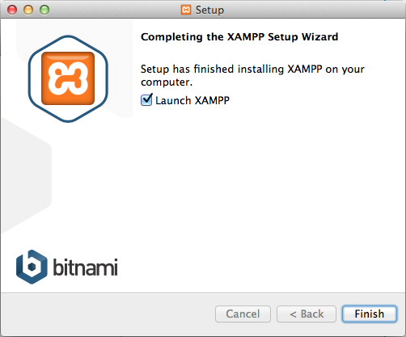 You can decide if you want to start the Application Manager for XAMPP immediately or not (through the checkbox). If you start it, you can start the Apache HTTP server and MySQL database server from it. If we keep the checkbox checked, and click the Finish button, you will see the Application Manager window. 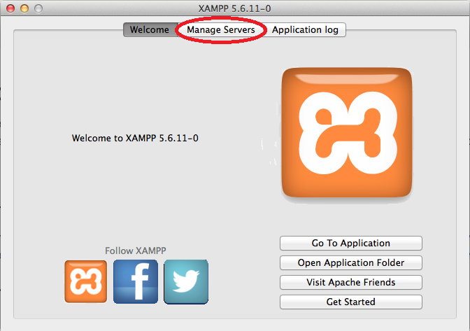
- If you close the Application Manager window, you can start it in this way: Applications ⇒ XAMPP ⇒ click manager-osx In the Application Manager window, click the Manage Servers tab, 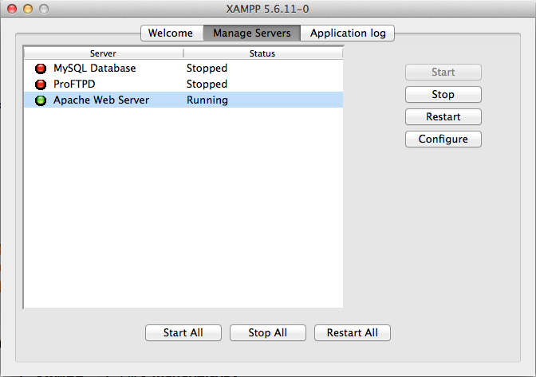 You can start the Apache server by clicking the corresponding Start button (if it has not been started). If you want to use MySQL, you can click the Start button for MySQL to start MySQL database server (after you start the Apache server in order to access MySQL from the phpMyAdmin).

- Open a web browser and type the URL: http://localhost (or just localhost). You would see the page below,
- In order to check if your MySQL is connected successfully, you need to type the URL: http://localhost/phpmyadmin manually, because there is no suitable link for it on the page, 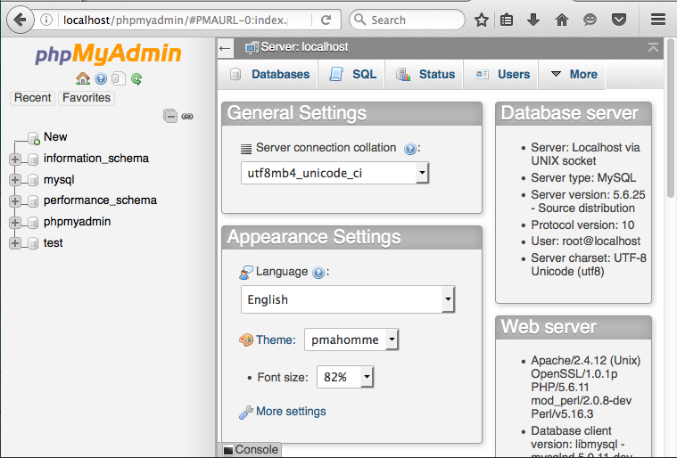 You would see a page with all of your MySQL databases. If you see the above page, you are ready to develop web applications by XAMPP.